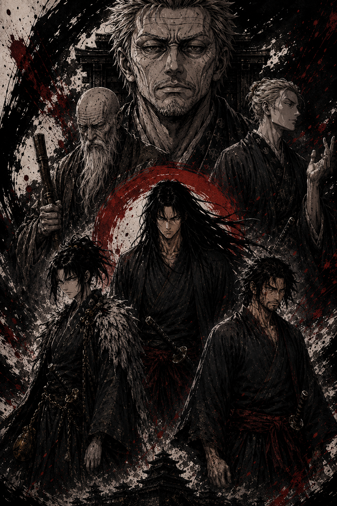

Guerreiros caminham entre honra, maldição e morte.
Entre em sua conta e leia um capítulo para salvar seu progresso.
Num mundo feudal dilacerado pela guerra, o Clã Kurotsuki reina supremo há gerações. Sua força é lendária, seu domínio, absoluto. Dizem que sua vitória não vem apenas de espadas, mas de um pacto antigo com algo que habita as sombras.
Quando Rin, uma jovem marcada pela perda, se vê forçada a fazer uma aliança perigosa com Katsuro, um capitão de um clã rival, ela acredita estar apenas jogando um jogo político mortal. Mas sua busca por justiça desenterra um segredo primitivo e adormecido, despertando forças que há muito foram confinadas à escuridão.
Agora, uma guerra muito mais profunda começa. Uma guerra que testará os limites da lealdade, do sacrifício e da própria natureza humana. Porque alguns inimigos não estão do outro lado do campo de batalha. Eles estão dentro de você.
Onde cada escolha tem um preço de sangue, e a maior batalha é contra a herança que você nunca pediu para ter.